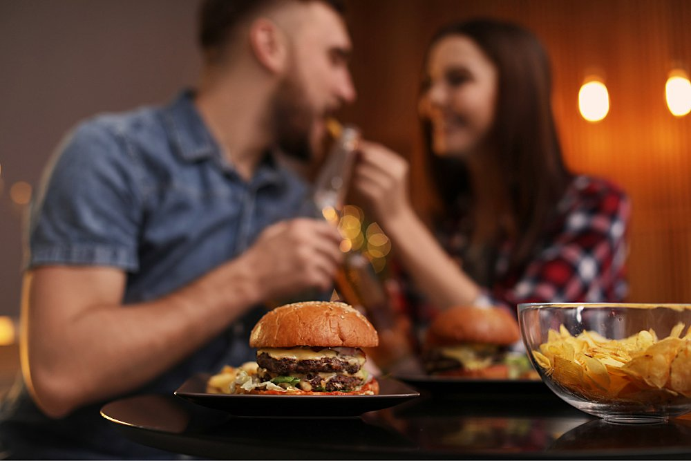

Blog
Press & News
Freddy Burgers is often featured in top media as one of the best burger food trucks in the USA.

FLAUNT MAGAZINE | JULY 28
BuzzFeed Loves Freddy Burgers!
Where have you had the most delicious burgers in Los Angeles? Yesterday, walking around the city center, we saw an unusual food truck...
Read Article
CONDE NAST TRAVELER | JULY 12
Top 50 Food Trucks Worth Traveling for
If you don't try street food in a new city, you will not understand anything about its atmosphere, local tastes, and culture.
Read Article
C MAGAZINE | JULY 02
TTop 10 NYC Burger Food Trucks
Tired of pizza for lunch? Why not get out of your stuffy office and order a fresh and juicy burger? Here are the best burger food trucks in LA.
Read Article